Herbstsemester 2026
MLOps — Hochschule Luzern · projects in progress
Try a different keyword or clear the search.
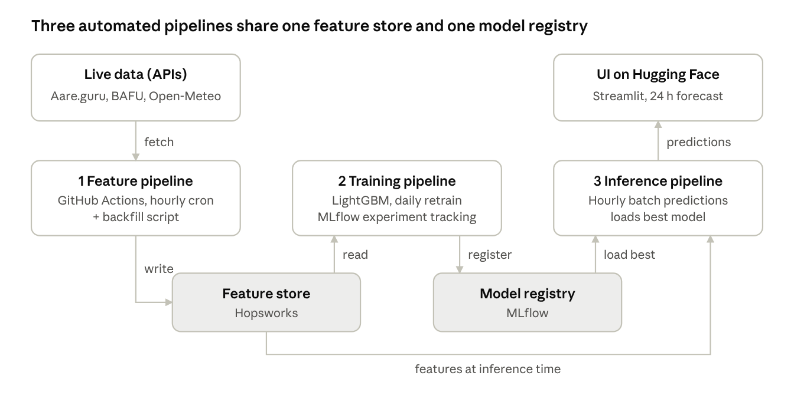
Predicts the Aare water temperature at the Bern-Schönau gauge 24 hours ahead, re- issued every hour, so swimmers can plan tomorrow's swim. Combines live Aare.guru and BAFU gauge data, including the upstream Thun outflow, with issued MeteoSwiss forecasts.
GitHub →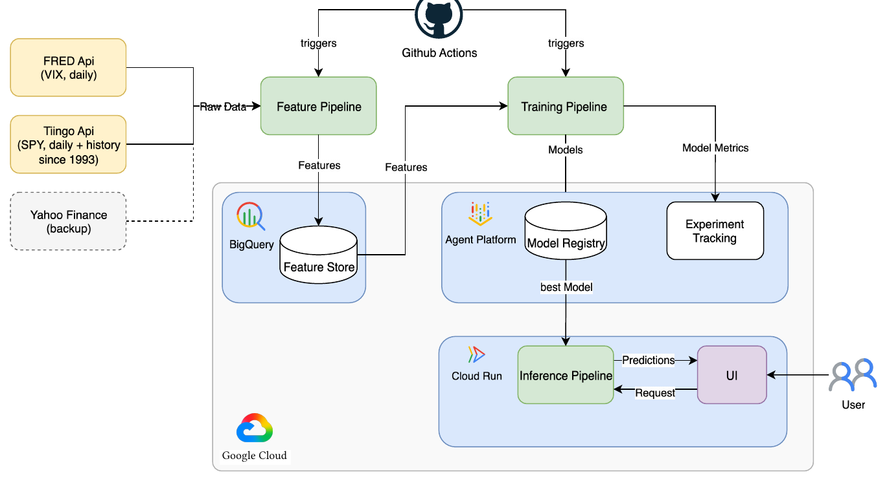
Forecasts the realized volatility of the S&P 500 (SPY) over the next five trading days, updated after every US market close. Benchmarked against trailing 20-day volatility and the VIX, for risk managers and long-term investors.
GitHub →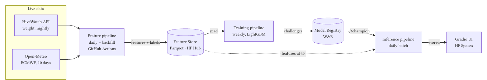
Predicts the daily weight gain or loss of monitored bee colonies in the Central- Swiss pre-Alps for the next ten days, refreshed every morning from hive-scale uploads and weather forecasts. Helps beekeepers time harvests, feeding and nectar gaps.
GitHub →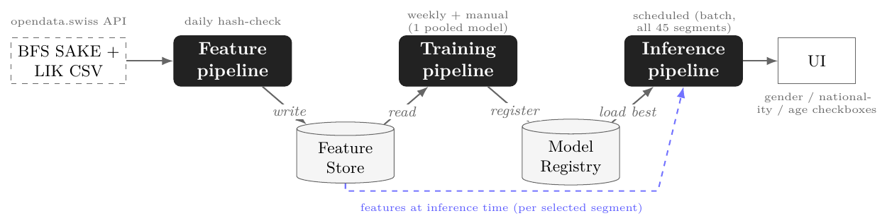
Forecasts Switzerland's quarter-ahead ILO unemployment rate for the national total and 44 demographic segments by gender, nationality and age. All 45 series are predicted on every run and can be explored in a checkbox UI.
GitHub →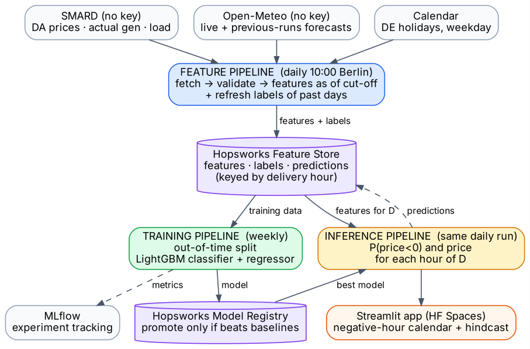
Predicts at 10:00 on the day before which hours of tomorrow's German-Luxembourg day-ahead auction will clear below zero. Aimed at solar, wind and battery operators who must bid before the 12:00 gate closure.
GitHub →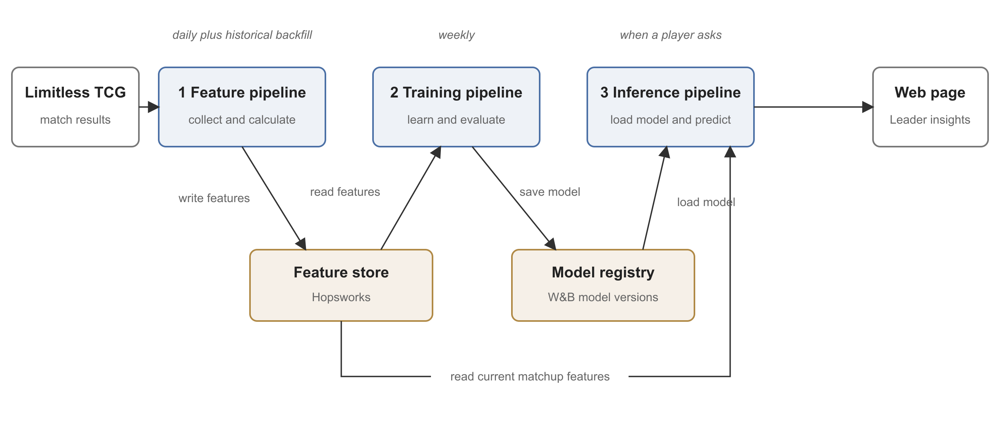
Estimates the probability that a player using one Leader beats a player using another, from Swiss-round results of Limitless tournaments. Shows recent win rates and match counts next to each prediction, evaluated with the Brier score.
GitHub →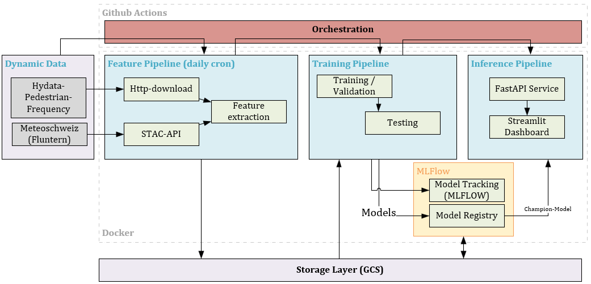
Predicts hourly pedestrian counts on Bahnhofstrasse (Mitte) in Zurich from the city's open footfall sensors and MeteoSwiss weather data. Built to help nearby shops and restaurants anticipate customer traffic.
GitHub →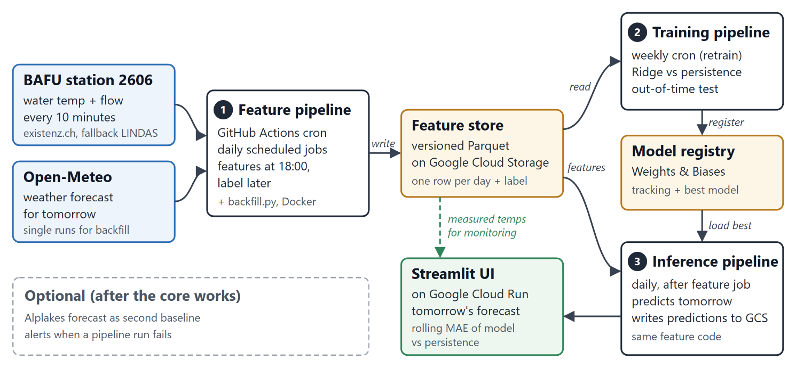
Predicts tomorrow's mean water temperature of Lake Geneva at the BAFU station in Geneva, issued every evening at 18:00. Meant for the swimmers and paddlers who use the lake all year round.
GitHub →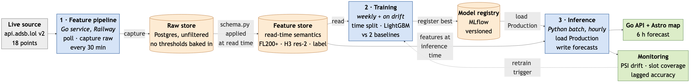
Predicts, for every H3 airspace cell over Europe, the probability of GNSS jamming or spoofing six hours ahead, re-issued hourly. Labels come from the navigation- integrity values aircraft broadcast over ADS-B.
GitHub →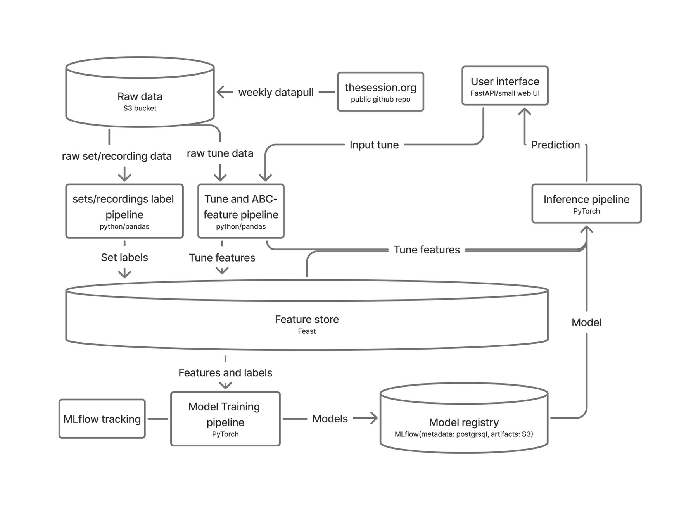
Recommends ten tunes that fit well into a set with a given Irish traditional tune, learned from historical set data on thesession.org. Evaluated by Recall@10 against a co-occurrence frequency baseline.
GitHub →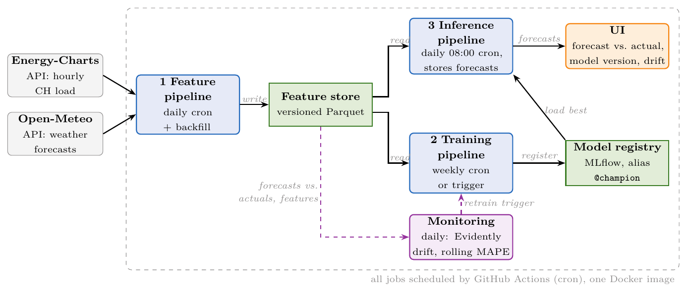
Forecasts Switzerland's total hourly electricity load for all 24 hours of the next day, every morning at 08:00. Runs straight into the heating season, so the system has to cope with real, predictable data drift.
GitHub →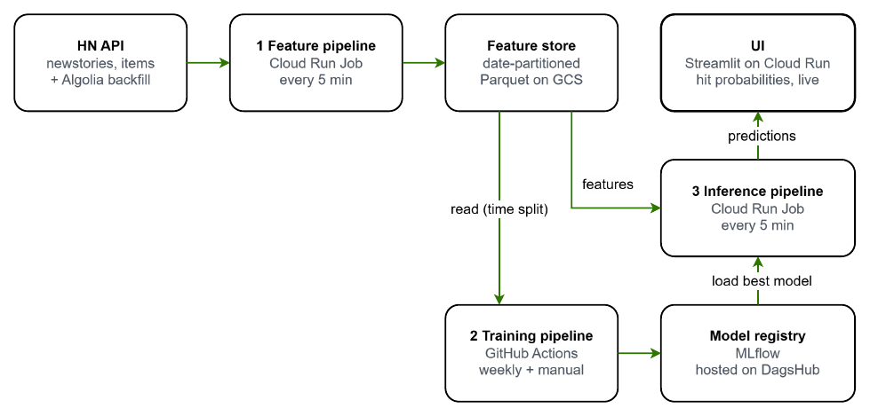
Watches every new Hacker News story for its first 30 minutes and predicts whether it will reach 100 points within 24 hours. Benchmarked against a points-momentum baseline, with daily top-10 alerts for authors and readers.
GitHub →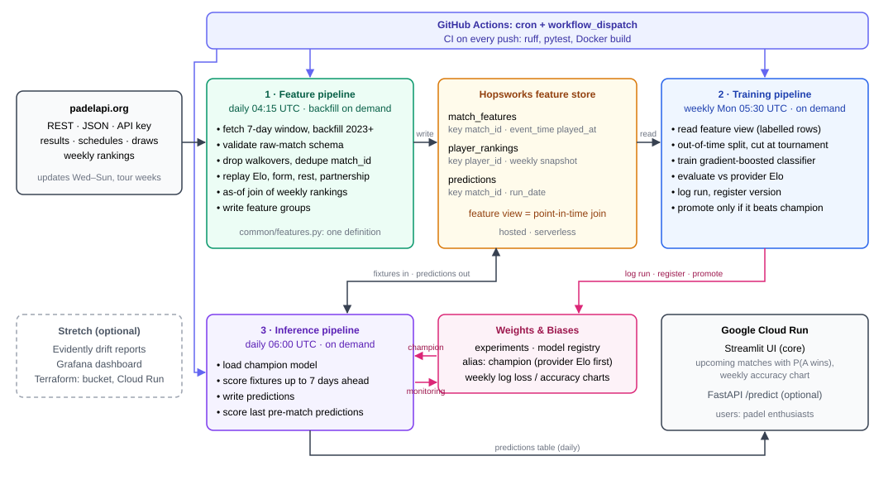
Predicts the probability that one pair beats another for every scheduled main-draw match on the Premier Padel and FIP tours, refreshed every morning. The data provider's own Elo serves as the first champion model to beat.
GitHub →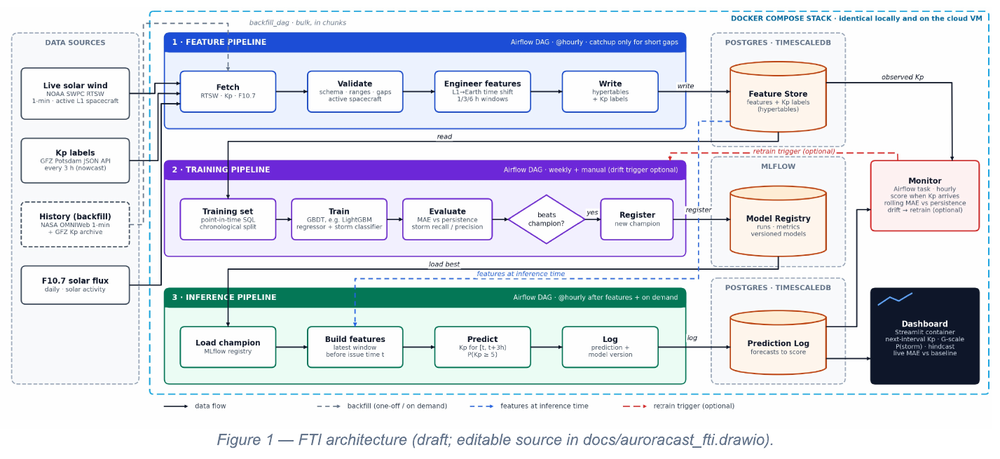
Forecasts the planetary geomagnetic Kp index and the chance of a G1+ storm for the next three-hour interval from live NOAA solar-wind measurements. For aurora watchers, photographers and HF-radio users.
GitHub →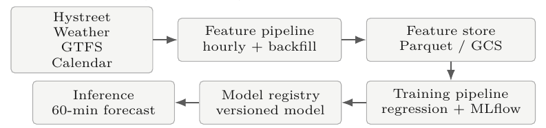
Forecasts the number of pedestrians at the Lintheschergasse counter in Zurich for the next hour. Tests whether upcoming public-transport activity, weather and calendar context beat a strong seasonal baseline.
GitHub →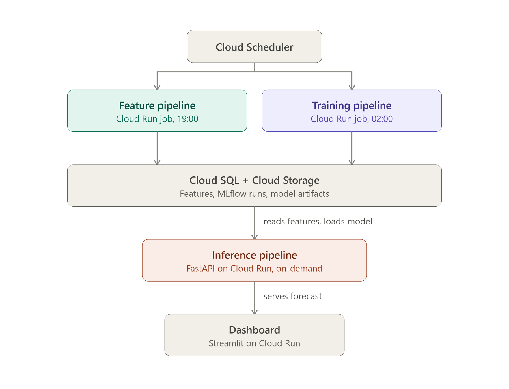
Forecasts the total system imbalance of the Swiss control area for the next 24 hours at 15-minute resolution, from data Swissgrid publishes daily. Retrains every day and serves the latest forecast on a small dashboard.
GitHub →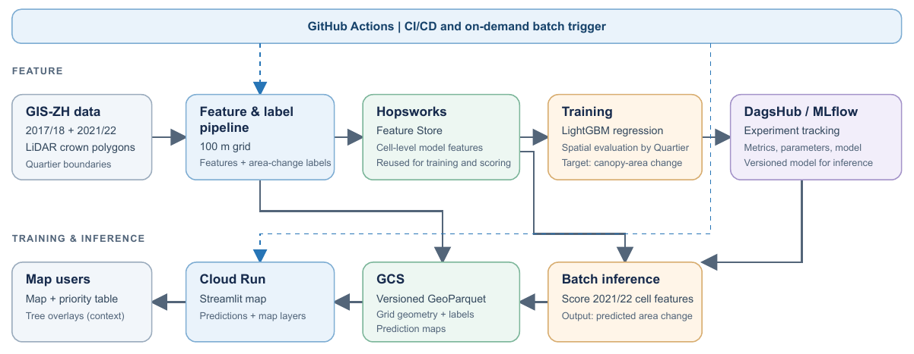
Estimates how crown-covered area changes in each 100 m cell of Zurich between LiDAR epochs. Turns the estimates into a prioritization map that shows where canopy loss is likely and replacement planting matters most.
GitHub →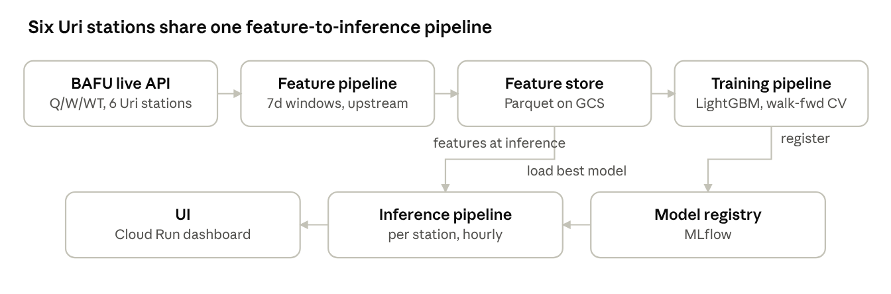
Predicts water levels 24 hours ahead at six BAFU gauges along the Reuss and Schächen in canton Uri, treating them as one connected system. Each forecast maps to a drought, normal or flood-risk band on a dashboard.
GitHub →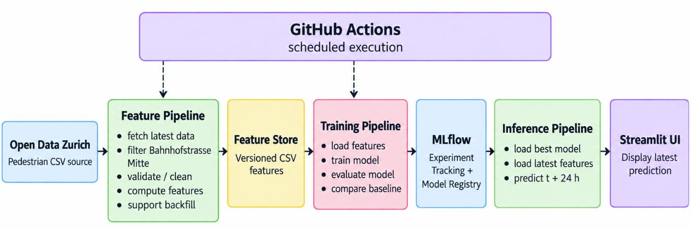
Predicts hourly pedestrian counts at Bahnhofstrasse Mitte in Zurich for the following day from continuously updated sensor data. Measured against a seasonal- naive baseline that repeats last week's count.
GitHub →